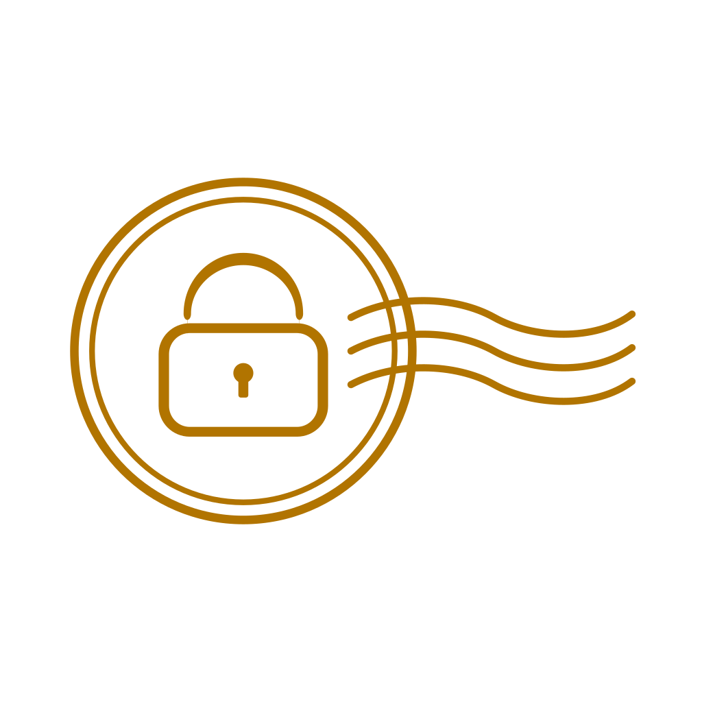
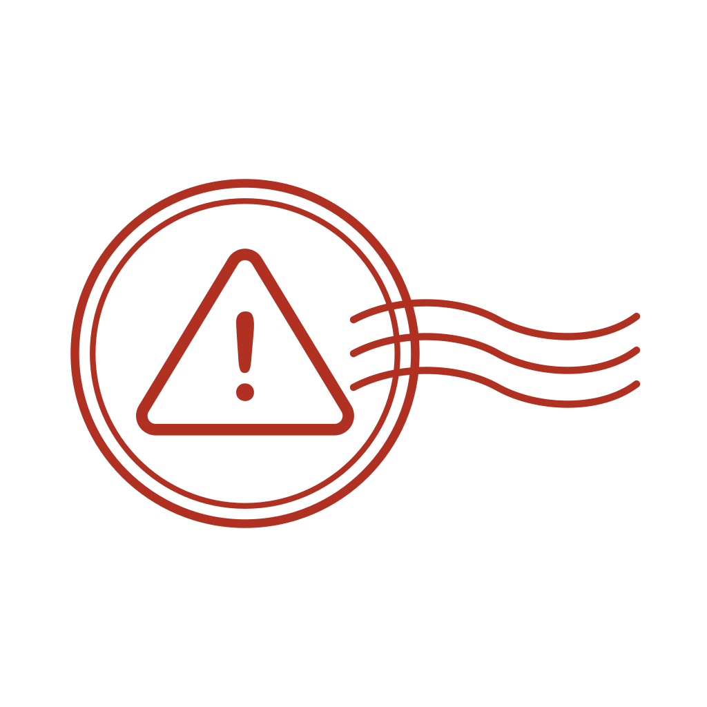

加密
6 張憑證 · 集中管理區使用 1.2 GB
點圖示（撕線貫穿卡片全高、圖示疊在正中間，點哪裡都算）試試撕開動畫—— 先撕一小角、停一下（正式版這裡會跳密碼／Passkey 驗證），驗證通過才整張裂開， 裂開後整列會飛走、下面的列往上補位（這是測試，用右上角「重置清單」復原）。
專案合約書.pdf
家庭照片備份
批次加密：3 個檔案（報稅資料.xlsx、收據掃描.jpg 等）
密碼管理備份.zip

×2遠端桌面憑證.pfx
個人日記.docx

指標遺失